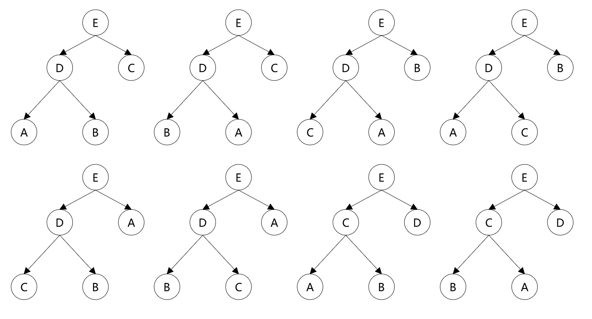
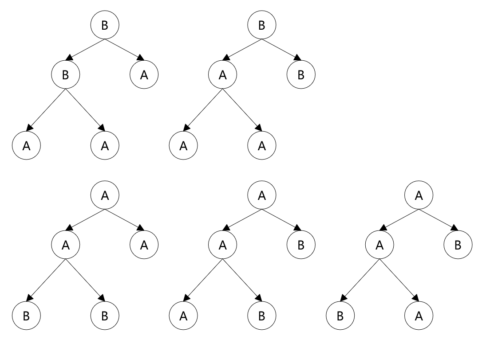

© 2019 《算法（第四版）》C# 题解 | Provided By 沈星繁
搜索解答
目前已完成到 2.5
2.4.9
上次更新：2019-02-11
题目
2.4.9 给出 A B C D E 五个元素可能构造出来的所有堆， 然后给出 A A A B B 这五个元素可能构造出来的所有堆。
解答
首先 A B C D E 中，根节点必须是 E （假设为最大堆） D 只能选择 E 作为父结点。 C 可以选择 D 或者 E 作为父结点。 B 可以选择 C 或 D 或 E 作为父结点。 A 可以选择 B 或 C 或 D 或 E 作为父结点。 又由于堆的大小为 5，堆的结构固定，一共三层。 E 只能为根节点 D 可以在左侧或者右侧 当 D 在左侧时， D 的子结点可以在 A B C 中任取两个，剩下一个当 E 的右侧子结点 总共有 A(3, 2) = 6 种 当 D 在右侧时， C 的子结点只能取 A 和 B ，故只有 A(2, 2) = 2 种情况。 综上，最大堆总共有 6 + 2 = 8 种构造堆的方式。 最小堆的构造同理，也有 8 种构造方式。 故总共有 8 + 8 = 16 种构造方式。 构造方式（最大堆）： 
最大堆 B 只能作为 B 的子结点，A 可以是 B 或 A 的子结点。 根节点恒为 B 第二层结点有两种选择 A B 和 B A 第三层只有一种选择 A A 故总共有两种构造堆的方式。 最小堆 根节点恒为 A 第二层可以是 A A 或 A B 第二层是 A A 时 第三层只能选择 B B 第二层时 A B 时 第三层可选择 A B 或 B A 故总共有三种构造堆的方式。 综上所述，总共有 2 + 3 = 5 种构造方式。 构造方式（全部）： 